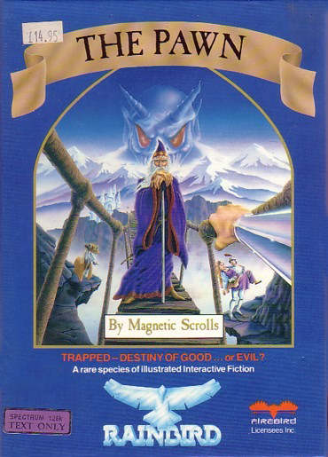
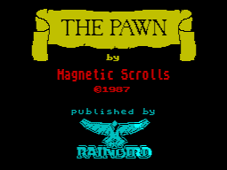
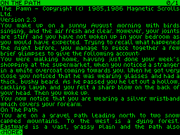

The Pawn


{kind=link}

| Publisher: | Rainbird |
| Price: | £14.95 |
| Year: | 1987 |
| Source: | CRASH, Issue 41 |

The Pawn will already be known to many, as it has been doing well on the larger computers (including the QL and the Atari ST). However, it looked like there was little chance of it filtering its way down to the smaller home micros. Well, before we’ve even had time to think about The Pawn and anticipate it, here it is on the 128K Spectrum, albeit without the graphics which have so prettily decorated its reviews for other computers. Text-only on the 128, The Pawn still provides all the entertainment of its sister versions.
Unless you’ve been an adventuring ostrich, you’ll already know that The Pawn has received many accolades. Opening up the typically glossy Rainbird package quite a jumble of parts comes tumbling out. The largest, most glossy booklet is the novella, A Tale of Kerovnia by G Sinclair, which shows a map of Kerovnia on its back cover and includes a cypheric help section towards the end. This set of numbers and letters, when typed into the computer after the input HINT, is digested by the program itself and are regurgitated as plain English phrases. As the number of letter and number combinations are long in order to answer such questions as How Do I Cross the Red Line? and How Do I Drop the Wristband?, the instructions give you two examples to try your hand which I can reveal bring up these two comments: ‘Congratulations’ and ‘one two, one two, testing’. Also in the package are two smaller booklets, one a general guide to gameplay and the other a more specific set of notes directed at the 128K Spectrum. To complete the pack is a good poster displaying the picture featured on the novella cover.

The screen layout, being full of text, is necessarily restricted in the ways in can offer diversions from a large sheet of words, but the program has made some attempts to provide interest. The top contains a band which bears the name of the current location, along with your score and the number of locations visited (you’ll know which is which, as one of these figures increases rather more easily than the other!). What’s below is light-coloured, superbly redesigned and readable text against a dark background. Cleverly, the program allows the intensity of the text colour to be raised or lowered by just pressing the GRAPH key, so you can keep the text readable as light conditions falling upon the screen vary (perhaps midday to midnight with a game as involved as this!). The GRAPH key is listed, along with some others which greatly assist editing your input during play. Apart from the usual delete one character to the left key (DELETE) you can also employ the left and right arrows to move through the text, the up and down arrows to jump one word left or right through the text, or delete one word to either left or right with TRUE VIDEO and INV VIDEO. Were this not enough, EDIT pulls down your last entry after the program has acknowledged it and found it wanting. These features, along with the 42 character lines (giving an almost word processor neatness to the display) and the up to two-and-a-half line input lengths, give the game a feel far removed from the old Spectrum fonts and faces.
The storyline and gameplay are truly enthralling, although you might take its boast of accepting everything you input lightly, as on many occasions the parser seems to ignore the second logical part of a long construction.
The story concerns a King Erik whose popularity has slid in the polls due to his condoning the banishment of the Roobikyoub dwarfs. The puzzle of the Roobikyoub lies in their supposed assassination of Queen Jendah II and their vital economic importance as they produced the smoothest, strongest malt whisky. Now the economy is literally depressed, with the gap in the drinks market filled by the Farthington Real Ale Company and the spring water-bottling Romni gnomes, interest groups who have no desire to see Roobikyoub in any new alignment (groan!). But people still hanker for the old whisky.

Play is fully explained in the booklet in a fashion which indeed, as the programmers hoped, goes a long way to enticing new adventurers to the game while still retaining the respect of old hands. The number of variations to achieve even a simple task are great as in LEAVE SHOP, where you can enter just that or:- GO SOUTH, S, GO S, OUT, O, EXIT, EXIT SHOP, or EXIT SOUTH. Similarly, the rather more complicated area of picking up items in a crowded location allows the likes of GET ALL FROM THE SCHOOL BAG EXCEPT THE ERASER or GET ALL EXCEPT THE CASES BUT NOT THE VIOLIN CASE which if you follow the logic, actually means you will get the violin case along with all the objects except the other cases! More impressive still, the instructions weigh in with KILL THE MAN EATING SHREW WITH THE CONTENTS OF THE VIOLIN CASE (a sentence which is even ambiguous in plain English!) AND REMOVE THE SHREW'S TAIL, an example of possessive construction I can’t remember seeing before in an adventure (SYMB SHIFT and 7 brings up the raised apostrophe). AND, THEN, punctuation and IT are catered for as well but rounding off the vocabulary with another impressive feature is the intelligent way the program deals with input as when it asks a question to clarify the player’s aims. For example, when dropping a hat the program might wonder which one should you be carrying two. Many programs inquire ‘Which hat?’ or ‘Which one?’, but this program not only is more specific with the query (say, ‘Which hat, the small hat or the spotted hat?’) but also allows the player to just quickly type in which hat without the need to repeat the initial input. Friendly indeed, mighty friendly.
Getting quite a way into the adventure there are some areas which suggest some largess on the part of the instructions. I have already mentioned the occasional relapse by the program when it chooses to ignore the second part of a complex sentence. The examine command (where, like most words, EXAMINE must be spelled out fully, along with long words such as floorboards) can be helpful, as in EXAMINE GRAVEL, ‘The gravel is small pieces of black stone’, can miss entirely as with ‘What black stones?’, or give a reply which may or may not be comical, ‘The arms are quite long for the time of year.’ It’s worth noting here that EXAMINE and LOOK IN are subtly different commands, bringing about fundamental changes in your fortunes should you learn how to use them properly. On another occasion you are told how you cannot see a tree when you are in a forest while, despite the instructions boasting many weird and wonderful adjective recognitions, the program does not comprehend LOOSE in the command EXAMINE LOOSE FLOORBOARD. Let’s stay with this one to lead me into one or two misgivings I have with the plot. EXAMINE FLOORBOARD replies ‘large and very solid’ yet levering the board with the hoe achieves nothing but doing something a lot simpler gets the result. However, more worrying in terms of a credible plot is the pouch which doesn’t seem to exist until you have fetched the guru his water, an act totally unconcerned with the appearance of the pouch. Such inconsistencies pull the plot into an ever tightening feel of linearity.
The Pawn is a major addition to the Spectrum game player’s library of fine games. As an adventure it is a most traditional fantasy affair with fewer unusual additions than you might expect, making little effort to probe new problems or find original solutions. No-one could be blamed for looking enviously at the superlative pictures seen on the Atari ST version (as on the box) but this text-only Spectrum game is still a fascinating trip into the imagination where all avid adventurers, fresh-faced or wizened, long to dwell.
COMMENTS
| Difficulty: | Not difficult |
| Graphics: | None |
| Presentation: | Neat character set, adjustable text intensity |
| Input facility: | Complex sentences |
| Response: | Fast |
| General rating: | Really engaging, complex adventuring |
| Atmosphere: | 95% |
| Vocabulary: | 90% |
| Logic: | 87% |
| Addictive quality: | 92% |
| Overall: | 90% |